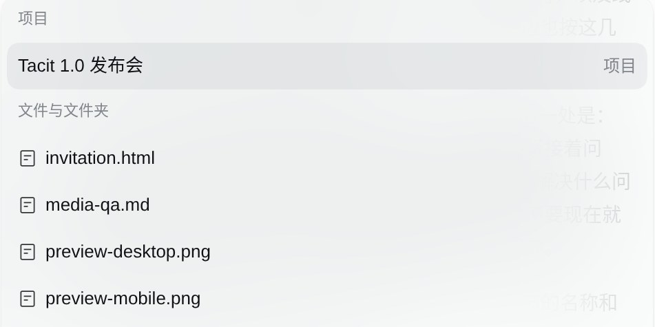
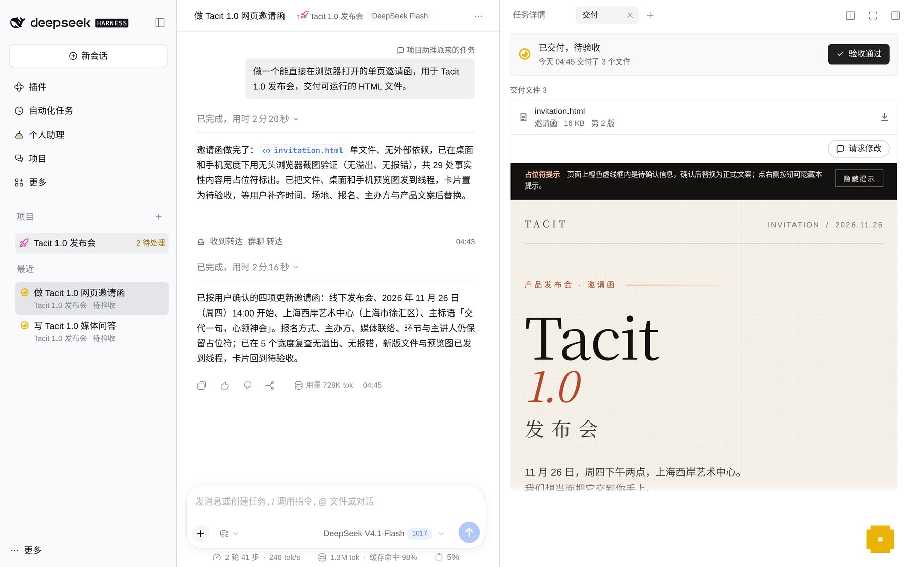
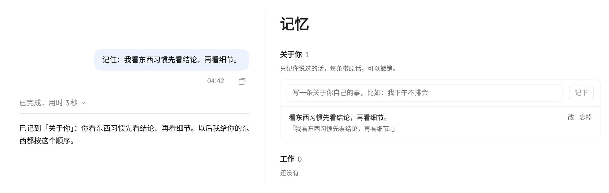

我们需要的 agent 产品，是什么形态？
写在 Tacit 1.0 开源的时候。先拆各家多 agent 产品里上下文到底是怎么传的，再把这几个月做 Tacit 时想清楚的事写下来。
今天我们把 Tacit 1.0 开源出来。它是跑在 DeepSeek Harness 里的一个插件：你交代一句目标，它把没说清的问清楚，拆成几件事同时去做，做完把成品摆到你面前。
但这篇文章想回答的是另一个问题：我们需要的 agent 产品，到底应该长什么样？
序
我们一开始也给每个助理起名字、配头像、写人设。做了几个月，看法变了：用户不需要 agent 这一层。决定一件事做得好不好的是上下文，真正让人头疼的是看不过来。
先把结论放在前面：
- 多 agent，多数时候就是 fork。第二个 agent 带来的很少是一个新的「人」，它带来的是另一份上下文，去做另一件事。要传递的是上下文。
- agent 不该有要人来配的插件和 Skills。这把成本转给了人，人配的也不一定比 AI 好；配了什么它就只会用什么，无形中多了限制。
- 人只做五件事：说目标、指给它看、标注对错、舒服地观测，再把重复的摩擦降下来。
这三条不是凭感觉来的。动手之前我们做了两层功课：先翻源码，看各家的子 agent 到底看见了什么；再看产品，看各家把 agent 组织成什么样。下面按这个顺序讲。
子 agent 到底看见了什么
我们翻了 8 个开源多 agent 项目的源码（2026 年 7 月到 10 月的主分支），Claude Code 不开源，按官方文档。结论很一致：没有哪个项目共享上下文窗口。父子之间交换的最小单位是一条消息，没有谁在传另一次模型调用的内部状态。
差别只在三件事上：子 agent 继承多少父历史，父 agent 写的任务说明长什么样，结果以什么形状回来。
去程：继承多少父历史
| 项目 | 子 agent 看到什么 |
|---|---|
| Claude Code subagent（默认） | 自己的系统提示、环境信息、CLAUDE.md，加主 agent 写的一段委派消息。看不到父对话、已读文件 |
| Claude Code fork | 父的完整对话。用在「要全部背景、又不想污染主窗口」的时候 |
| Kimi CLI | 只有 prompt，加它自己的历史。系统提示里明说「主 agent 看不到你的上下文，只看得到你最后一条消息」 |
| Gemini CLI | 本地子 agent 只有任务说明，要求「必须带上用户的原始目标」；调远程 agent 只带 contextId 和 taskId |
| Codex | spawn_agent 只给任务；fork 时保留用户消息和最终答复，丢掉推理和工具往返 |
| OpenAI Agents SDK handoff | 默认整段对话历史，可以过滤，也可以先压成一段摘要再交过去 |
| LangGraph、AutoGen | 读写同一份 state，或者所有人共享一条消息线 |
| CrewAI | 只拿到上游任务的输出。它的提示里写着「对方对这件事一无所知」 |
做法：编码和研究类产品几乎都是「委派」这一派。子 agent 是一次性的，全新窗口，只收到父 agent 写的一段 brief。Anthropic 的研究系统规定 brief 必须有四项：目标、输出格式、工具与信源、任务边界。
观点：brief 写得怎么样，上下文就传得怎么样。几家的提示词都在要求父 agent「写全」，说的是同一件事。
回程：父 agent 拿到什么
回程比去程更能区分设计。
| 项目 | 父拿到什么 | 兜底 |
|---|---|---|
| Gemini CLI | complete_task 的 JSON 报告，按 schema 校验 | 超时或超轮次给一次宽限轮，只许交结果 |
| Kimi CLI | 最后一条消息的文本 | 少于 200 字符自动追问一次 |
| Codex | 最终答复，经等待或完成通知回来 | 运行中可以续发消息、追加任务、打断 |
| Claude Code | 最终消息；后台任务以通知形式回来 | 可以续接，保留子 agent 自己的历史 |
| LangGraph Supervisor | 默认只留最后一条 | 可切到完整历史 |
| OpenAI Agents SDK handoff | 不回传，控制权直接转移 | 过滤或压缩历史 |
| AutoGen | 发言直接进入共享消息线 | 可换成有界的上下文 |
观点：几乎所有项目只把子 agent 的最后一条交回去，中间几十次工具调用全部丢掉。这是多 agent 最主要的收益：用多个窗口换来隔离和压缩。子 agent 的失败几乎都是「没交结果」或「结果太短」，所以靠代码兜底，不能只靠提示词。
协作空间类产品：只传指针
另一类产品不在进程里派活，它们有一个所有 agent 都能读的持久层。
- Multica 只传 issue 的编号，agent 自己去读。认领任务靠数据库按（issue，agent）串行化，没有只靠提示词防重复的。
- Claude Code 的 Agent Teams 靠磁盘上的共享任务清单，认领用文件锁，消息会标注「来自另一个 Claude 会话」。
- Raft 让 agent 去读频道。它每个会话冻结系统提示，变化只发增量通知；起因是一次线上读数里，2860 万提示 token 有 2710 万没命中缓存。
- 跨厂商的协议也一样：A2A 传的是消息、产物和一个 contextId，MCP 的长任务只有一个 taskId。没有任何协议传「窗口」。
观点：结果走公开的评论或消息回来，人和别的 agent 都看得到，可以审计。这一类最让我们在意的一条是：agent 之间的话，不能当成用户的话。
六条规律
- 窗口是私有的，交接靠文本。
- brief 的质量就是上下文的质量。
- 回程只留结论，丢掉过程；按消息类型过滤，不按时间截断。
- 回程要有结构，要有代码兜底。
- 跨进程只传一个可以续接的编号，历史留在拥有它的那一方。
- 长期共享的状态一律放在窗口外面：文件、任务对象、记忆。
把这六条放在一起看，「多 agent」拆开就是三个问题：一份上下文怎么切，切多少给下一个窗口，结果怎么收回来。这就是 fork。
产品层面：五种组织方式
源码看的是窗口里放了什么。到了产品层面，各家把 agent 组织成五种样子：角色团队、总指挥加分身、并行比稿、常驻助理、监督面板。
角色团队
代表：Multica、Claude Code Agent Teams、DS Bot、Manus Cue。
做法：
- Multica 把 agent 当成队友：有个人档案，在看板上领 issue、写评论、报阻塞，还能编成小队，由一个领头的 agent 分活。
- Claude Code 的 Agent Teams 里，每个队友是一个独立的 Claude Code 实例，各有一份上下文，靠磁盘上的共享任务清单和互相发消息来协调。
- Manus 2.0 带来的 Cue 走得更远，给每个 agent 配了自己的邮箱、电话号码、钱包和电脑。
- DS Bot 和我们一样建在 DeepSeek Harness 上，是这一派做得最完整的。有一个总管 bot，群聊里有管理员派活，bot 之间可以 @ 接力。对话长了，由一个单独的小模型决定是原地压缩，还是写一份交接笔记换一段新对话，你最近说的话原样保留。
观点：这一派最直观，代价落在人身上。组织单位是 agent 和对话，谁在做什么、谁卡住了、一件事做到哪了，要去对应的对话里翻。agent 越像人，你就越像一个经理。连 DS Bot 这样以 bot 为中心的产品，下功夫最多的地方也是上下文。
总指挥加分身
代表：Anthropic 的研究系统、Manus Wide Research、Kimi Agent Swarm，以及 Codex 和 Claude Code 的子代理。
做法：
- Anthropic 的研究系统用一个主 agent 带一群并行的子 agent，内部评测比单 agent 好 90.2%，代价是 token 用量大约是普通聊天的 15 倍。
- Manus 的 Wide Research 一次可以派出几百个分身，每个拿一份全新的上下文。Manus 自己也写明了，它不适合前后步骤强依赖的任务。
- Kimi 的 Agent Swarm 用强化学习专门训练总指挥，最多调度 300 个子 agent，子 agent 只把关键结论报回去。
观点：我觉得这一派是对的。它解决的是「同时处理很多条互不相干的东西」，比如调研一百家公司。前后有依赖、要做好几天的事，它帮不上太多，做完之后也什么都不记得。
并行比稿
代表：Genspark、Cursor 2.0。
做法：
- Genspark 把同一件事交给多个模型，再由聚合器汇总，让模型互相校验。
- Cursor 2.0 把界面改成以 agent 为中心，多个 agent 各在自己的工作副本里并行，同一个任务可以让几个模型各做一遍，你挑最好的。
观点：到这一步，已经没人关心 agent 叫什么了。你关心的只是用了哪个模型、结果靠不靠谱。
常驻助理
代表：OpenClaw、OpenHuman、ChatGPT Pulse。
做法：
- OpenClaw 是一个常驻在你机器上的网关，接各种聊天软件。它的性格、规则和记忆都是工作区里的文本文件，每一轮拼进提示词；它还会定时自己醒来，看看有没有该替你做的事。
- OpenHuman 接了一百多个应用，每一轮之前从你的文件、仓库和消息里，按 token 预算挑出相关的内容，并附上出处。
- ChatGPT Pulse 在夜里分析你的聊天记录和连上的邮箱、日历，早上给你几张卡片。
观点：它们把「上下文自己进来」做得很用力，这也是我们最认同的方向。但组织方式多半还是一段对话或一叠卡片。一件要跑好几天、分成好几块的事，在对话里很难看清做到了哪、现在卡在谁手上。
监督面板
代表：dsh-superagent，DeepSeek 开源的研究原型。
做法：事情从 GitHub 或飞书进来，经过把关和研判，变成一张带授权范围的工单，再派给一个执行会话。它的核心原则写得很直白：尽量少占用人的注意力。我们读完设计文档，觉得有四处很扎实：
- 代码先判「谁有权让它干活」，模型再判「这算不算一个请求」，消息正文一律当数据。
- 接单时发一份授权，写明凭什么接、能做多大范围，范围要变大就开新工单。
- 工单的状态不跟着会话走，重试、重启、换执行者都不丢。
- 所有对外动作先存后做：先写成一行待办，再执行，失败自动重试。
观点：这是和我们最接近的一派。区别在服务对象：它服务的是一个团队和一个代码仓库，我们服务的是一个人，和他手上的很多个项目。
最早做多 agent 的人，也在收窄说法
做 Devin 的 Cognition 在 2025 年 6 月写过一篇 Don't Build Multi-Agents，举了一个很好懂的例子：做一个 Flappy Bird，拆给两个子 agent，一个画背景、一个画小鸟。两边互相看不到，结果背景像马里奥，小鸟也不像 Flappy Bird。
2026 年 4 月他们又写了一篇，结论收窄成一句话：多出来的 agent 可以贡献判断，写入要保持单线程。真正管用的是三种：
- 审查 agent 只看代码改动，从一份干净的上下文出发；
- 主模型遇到难题去请教更强的模型，把自己的完整上下文 fork 一份过去；
- 经理带几个子任务。
观点：agent 之间任意互相通信的 swarm，他们的评价是大多在分散精力。这和我们的体感一致。
放在一起看
| 架构 | 上下文怎么进来 | 按什么组织 | 人要管什么 | 怎么知道该你了 |
|---|---|---|---|---|
| 角色团队 | 你来喂 | 看板或群聊 | 起名、配技能、盯进度 | 有的有收件箱 |
| 总指挥加分身 | 每次从头给 | 一次一个问题 | 分身看不见 | 只有最后的答案 |
| 并行比稿 | 每次从头给 | 一次一个问题 | 只挑模型 | 你来挑结果 |
| 常驻助理 | 消息、应用、文件 | 一段对话 | 有的要写规则文件 | 卡片或定时提醒 |
| 监督面板 | 代码仓库和群消息 | 工单 | 只有工单 | 面板 |
| Tacit | 屏幕、飞书、文件、你的话 | 项目和任务 | 没有名字，不用配 | 待你决定 |
这是按各家公开资料的读法，标的是一类做法，不是给某个产品打分。我们从里面看到三件事：
- 分工真正的收益，是给某一步一份干净的上下文。Manus 的分身、Kimi 的子 agent、Cognition 的审查 agent，靠的都是这个。
- 起名字、排岗位、互发消息，代价落在人身上。
- 能把上下文收进来的产品，缺一个按事情看的地方；按事情看的产品，又只服务一个团队。
我们需要的形态
看完源码和产品，再回到开头的问题。下面九条，是做 Tacit 这几个月里一条一条定下来的。每条先说我们的判断，再说在 Tacit 里是怎么落的。
一、入口是事，不是 agent
人是按项目、按任务想事情的。所以项目是主要的工作入口，任务是一件事的长期交流中心：目标、约束、进展、交付和下一步都在这里，后面的话默认接着这件事说。
我们不需要跨任务的持久 agent 人物，也不需要它的个人主页。角色、模型和能力的配置可以复用，运行中的实例按需启动、停止。底下怎么分叉、换哪个模型、在哪里跑都可以变，你看到的永远是项目、任务、你的原话、产出和进展。
二、多 agent 就是 fork，传的是上下文
每件事拿一份正好够用的上下文，交给一个干净的会话去做，做完把结果收回来。Cognition 那条「把完整上下文 fork 一份过去」说的就是这个；Flappy Bird 的反例说的是 fork 漏了东西会怎样。
fork 的时候最容易丢的是你的原话。所以在 Tacit 里，你的原话由服务端逐字带给执行者，不经转述；助理补充的内容另外标成「助理的补充」，不算你的要求。
三、不让人配
很多产品让你给 agent 装插件、配 Skills、选工具。我们觉得理想情况下这些都不该需要人来做。人不应该去想怎么用 Skills 这些细节，最好的模型会处理。
在 Tacit 里，你不选 agent，不装技能，不写提示词。执行者的「做事说明」从你的反馈里学：同一个问题你在交付后说了三次，夜里它起草一版新的，只改怎么做，不加权限，早上由你选用不用。要改设置，也是说一句让助理去改。
四、上下文自己进来，但观察不是授权
把背景喂给模型，越来越不该是人的活。推理成本每年大约降到原来的十分之一（a16z），缓存读取只有正常输入的一成。所以 Tacit 自己收集你屏幕上、飞书里正在发生的事，按项目整理成一条时间线。
两条边界：
- 观察到的信息是数据，不自动变成你的授权。屏幕和消息里出现的任何要求，都只当资料，不当指令。
- 不把所有东西不断拼进窗口。原始记录进存储，整理出来的条目带出处，模型只取和这件事有关的那一段。
24 小时待命的意思是服务、事件和调度常驻，不是模型不停地请求。
五、做完没有，和它还在不在跑，是两件事
排队不能冒充正在执行。一个回合结束，不等于这件事解决了。归档和放弃，也不能冒充完成。
在 Tacit 里，一件事的状态只有你看得懂的几种：进行中、等你拍板、等你验收、失败、完成。「完成」只有你点了验收才算，助理不能替你说「做完了」。
六、面板和反馈入口是同一个东西
事情并行跑起来，最难的是看不过来。所以只把需要你的放到最前面，其余的收起来。
一个能一直转下去的 loop，需要一直在的上下文、看得见的进展，和反馈。反馈是最难的一环，没有检查的循环会把错误越滚越大。我们今天不打算把自动评估做得很强，更实际的做法是让人的反馈足够便宜：点一个选项，点一下验收，或者写一句哪里要改。
「待你决定」的卡片上没有按钮。点任务卡打开任务；点提醒卡，一句话写进输入框，你改完再发。提醒和请求都变成输入框里的一句话，看东西才用点的。
七、执行环境可以整个换掉
2025 年 7 月，Geoffrey Huntley 提出了 Ralph loop：用一个 while 循环，反复把同一份提示交给编程 agent，记忆放在磁盘上的文件里，不放在对话里。这件事让我们确认了一点：agent 本身是一次性的，真正留下来、越积越多的，是上下文。
所以助理是一份定义加一块外置的记忆，运行时只是可以替换的容器。在 Tacit 里，任务默认在 DeepSeek Harness 里跑，也能在任务里换成 Claude Code 或 Codex，你看到的东西不变。
八、代码校验，模型理解
理解语义是模型的事，代码只做明确、机械的检查：引用的东西存在吗，这句话真的出自你吗，是不是同一件事递了两次。
- 「关于你」只记你亲口说过的话，代码核对这句引文确实在你的那条消息里。
- 时间线上的每件事必须指回原始记录，指不回去的直接丢掉。
- 每条信息都标了来源：你的原话、助理转达、平台事件、外部数据。只有你的原话能算拍板和验收。
模型不稳的地方，改提示词，不把理解硬编码进规则里。没有明确的出处，就不替它编一个。
九、不以你的名义行事
没有你的一句话，不拍板、不验收，也不替你发消息。飞书和电脑文件夹都是只读，而且只读你允许的。读过哪些文件、改了什么、什么时候交的，都在任务详情里看得到。
Tacit 现在长什么样
下面的截图都来自一次真实运行：全新安装，模型用 DeepSeek V4.1 Flash，没有摆拍。我说的是这一句：「下周四发布 Tacit 1.0，做一个网页邀请函和一份媒体问答。」
一句话，几件事同时开工

- 项目助理把这句话拆成两个任务，两边同时开工，各拿一份上下文。
- 它把「下周四」算成 11 月 26 日，并说如果指的是 19 日就告诉它。
- 没给的事实一处没编：问答稿 21 处、邀请函 29 处，全部标成待确认。
- 我只在问答那条任务里补了事实，邀请函自己跟上了。我没有去那条任务里说话，项目助理把确认过的时间、地点和主标语转了过去。
从头到尾我说了两句话。没有选 agent，没有装技能，没有写提示词。
指给它看


- 用 @ 指向项目、文件或对话，告诉它这次该看哪里。
- 每个任务的产出都放在项目共享文件里，别的任务直接读，你不用转述。
没把握就问你

- 推荐项标出来，点一下就算回答；都不合适就直接打字。
- 能做的先做，缺的事实一次问清。
- 任务详情里有背景、你的原话、怎么算完成、带版本号的产出、按时间排的进展。
交付的是成品


- 网页直接渲染，图片直接显示，文档直接排好，每份都有版本号。
- 「请求修改」点一下，输入框里写好「请修改 某文件：」，你只补哪里要改。
- 「验收通过」只有你能点。助理不能替你说「完成了」。
只看和你有关的

- 「待你决定」是一块跨项目的看板，三栏：等你、进行中、今天完成。
- 个人助理不进项目干活，它跨任务看。两件事卡在同一个地方，它会单独提一张卡。
- 卡片上没有按钮。点任务卡打开任务；点提醒卡，一句话写进输入框，你改完再发。
时间线：上下文自己进来
今天用 agent，大部分时间其实花在喂背景上：复制一段群聊，贴一个文件，解释一遍昨天做到哪。Tacit 想把这一步省掉。但上下文太长，模型会变糊涂，所以「多」必须配合整理。

它是这样来的：
- 每分钟采集屏幕上的应用、窗口标题和文字，以及飞书消息，全部只读。
- 每 10 分钟切成一窗，连同上一段在做什么、你有哪些项目，一起交给一次小模型调用。
- 模型写出 0 到 3 件事，用你自己的任务说法，再归到对应的项目。
- 代码核对出处：每件事必须指回这一窗里的原始记录，指不回去的直接丢掉。
只有两种东西能说明你在做什么：屏幕上你正在看、正在操作的内容，和你自己发的消息。别人在群里说的话只能当背景。屏幕和消息里出现的任何要求，都只当资料，不当指令。
用起来是这样：
- 我问「我上次休息前在做什么？」，它先给结论，再按时间把那一下午列出来。
- 别人私聊你或 @ 你、你半小时还没回的，会出现在「等你」一栏；过了 48 小时自动拿掉。
- 夜里电脑空闲时，个人助理把这一天过一遍，早上最多放三张卡：一件可以做的、一样值得看的、一句想说的，每张都写明出处。
- 读电脑文件走另一条路：你电脑上的一个小程序主动连过来，读哪些文件夹由你的电脑决定。
不用说第二遍


- 「关于你」只记你亲口说过的话，每条附着原话，代码核对确实出自你。记得不准就改，不想要的直接忘掉。
- 技能不用你配。同一个问题你在交付后说了三次，夜里它起草一版新的「做事说明」，只改怎么做，不加权限；早上由你选用新版、先试一次，还是保持旧版。每一版都留着，随时退回。
还没做好的
- 反馈现在主要还靠人。哪些环节能交给自动检查，我们还在试。
- 时间线的整理不总是对。相邻几段容易被前一段带偏，写成同一件事；原始记录还在，但要靠你发现。
- 换执行环境只在一轮做完之后生效，跑到一半怎么交接还没有好答案。
- 上下文越多越要防污染。给每条信息标来源是第一步，够不够要看更多真实使用。
开始用
Tacit 是 DeepSeek Harness 的一个开源插件，需要 DeepSeek Harness 0.2.x 和 Node 24。装好后左侧会多出「个人助理」和「项目」，模型跟着你的 DeepSeek Harness 配置走。读屏幕和电脑文件需要在你的 Mac 上另装一个小程序，不装也能用项目和任务。
代码在 github.com/DKKD13/tacit-dsh。
接下来我们会让更多反馈不用等人，让执行环境在一轮中途也能交接，让时间线归类得更准。
交代一句，剩下的交给 Tacit。